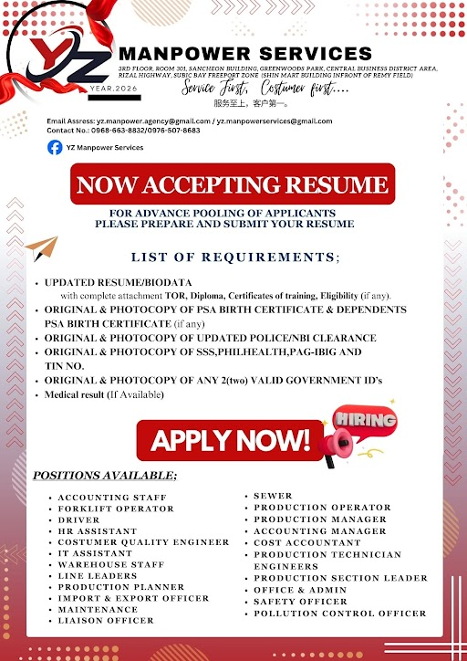

Open Positions
Roles combine our YZ Consultancy Services Inc. client flyer (volume hiring) and YZ Manpower Services advance pooling. Apply via this site (questionnaire + email) or send your résumé to yz.manpowerservices@gmail.com. Full document checklist →
- Flyer 1 — Client hiring (SBMA partner branding, per-role slot counts).
- Flyer 2 — YZ Manpower Services branding, full role list & document checklist.

Consultancy client flyer

YZ Manpower Services flyer
Production Operator
Production & WarehouseHigh-volume line work: follow safety and quality rules, operate assigned machines or stations, hit output targets, and report issues to line leaders. Listed on both flyers for mass hiring.
Sewer
Production & WarehouseIndustrial sewing and assembly for production lines; neat workmanship, ability to follow patterns and quality specs. Experience on industrial machines is a plus.
Warehouse Staff
Production & WarehouseReceiving, put-away, picking, packing, cycle counts, and stock accuracy; safe use of MHE where trained; keeps the warehouse orderly and aligned with shipping schedules.
Line Leaders / Production Section Leader
Production & WarehouseLead a line or section: brief the team, monitor KPIs, enforce 5S and safety, solve first-level problems, coordinate with planners and QA, and escalate downtime or quality issues.
Production Planner
Production & WarehouseBuild and maintain production schedules, align capacity with orders, coordinate materials with warehouse and buyers, and track plan vs actual with manufacturing and logistics.
Production Manager
Production & WarehouseOwns shift or plant output: sets targets, manages line leaders, drives safety and quality, partners with engineering and HR on manpower, and reports on performance and improvement projects.
Driver
Production & WarehouseCompany or service vehicle operation for personnel, goods, or documents as assigned; valid professional driver’s license, clean driving record, and compliance with traffic and company safety rules.
Production Engineers / Production Technicians
Engineering & TechnicalLine support, process troubleshooting, tooling and parameter checks, trial runs, CAPA support, and technical documentation; works with production and quality to stabilize and improve yield.
Customer Quality Engineer
Engineering & TechnicalBridge between plant quality and customer requirements: handle concerns, CARs, and audits, analyze defects, drive containment and corrective actions, and support PPAP or customer-specific standards.
Inspectors
Engineering & TechnicalIn-process and final inspection against control plans and sampling; accurate records, tagging of non-conforming product, and communication to line leaders and QA engineers.
Forklift Operator
Engineering & TechnicalSafe forklift operation for loading, unloading, and staging; follows site traffic rules and load limits; valid certification or training as required by the facility.
Electrician
Engineering & TechnicalInstall, test, and repair plant electrical systems and equipment; support breakdowns, preventive maintenance, and lockout/tagout; PEET or equivalent credentials preferred where required.
Maintenance
Engineering & TechnicalPreventive and corrective maintenance on production assets; basic fabrication, lubrication, alignment checks, and coordination with production for downtime windows.
Safety Officer
Engineering & TechnicalImplements OHS programs, incident investigation, toolbox talks, inspections, and DOLE reporting support; promotes a culture of safety on the shop floor and in offices.
Pollution Control Officer (PCO)
Engineering & TechnicalServes as Pollution Control Officer per DENR requirements: monitors compliance with ECC and permits, waste and wastewater records, self-monitoring reports, coordination with regulators, and internal environmental policies. PCO accreditation or willingness to obtain required training is an advantage.
HR Assistant / HR & Admin
HR / Admin & OfficeSupports recruitment, 201 files, attendance and HRIS encoding, onboarding paperwork, and general admin; strong organization and confidentiality; aligns with “HR Assistant” on the YZ Manpower flyer.
Office & Admin
HR / Admin & OfficeFront-office and back-office tasks: filing, data entry, scheduling, reception, and coordination across departments as listed on the YZ Manpower pooling flyer.
IT Assistant
HR / Admin & OfficeUser support, PC and peripheral setup, basic network and account troubleshooting, asset tagging, and coordination with vendors or HQ IT.
Import & Export Officer
HR / Admin & OfficePrepares and tracks shipping documents, coordinates with forwarders and brokers, monitors customs clearance, and ensures accurate filing for import/export transactions.
Liaison Officer
HR / Admin & OfficeRepresents the company in transactions with government offices, agencies, and PEZA/SBFZ requirements; processes permits, licenses, and follow-ups with professionalism.
Accounting Staff
Finance & AccountingVouchers, journal entries, reconciliations, billing or payables support, and month-end assistance under supervision; proficiency in Excel and accounting systems preferred.
Accounting Manager
Finance & AccountingOversees the accounting team, financial reporting timeliness, internal controls, audit coordination, and compliance with BIR and company policies.
Cost Accountant
Finance & AccountingProduct costing, BOM analysis, variance review, inventory valuation support, and manufacturing finance reports to help control material and conversion costs.